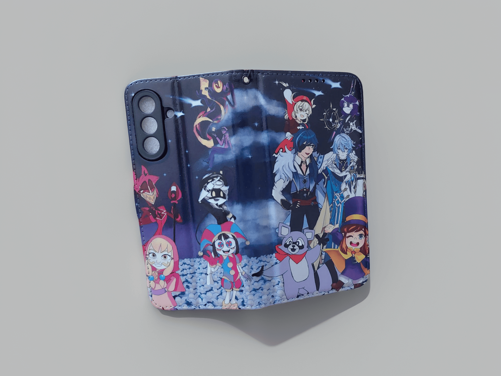
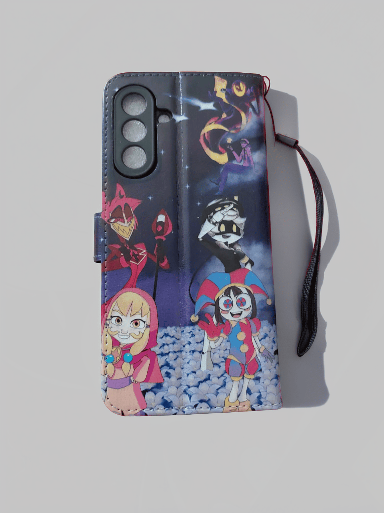
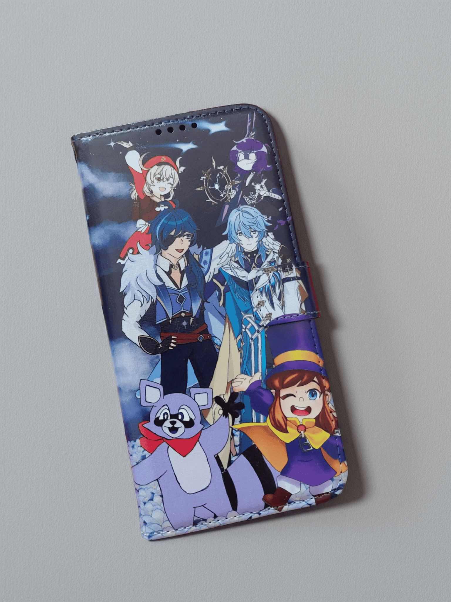
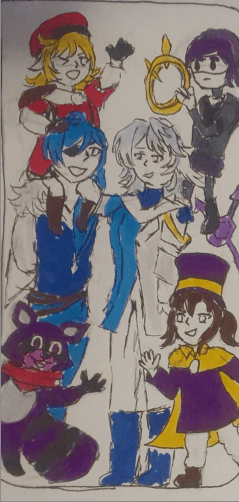
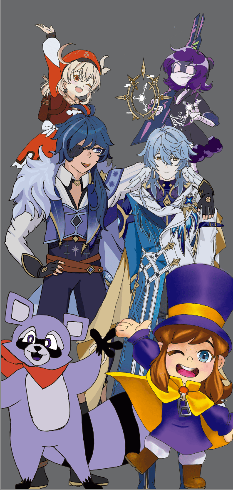
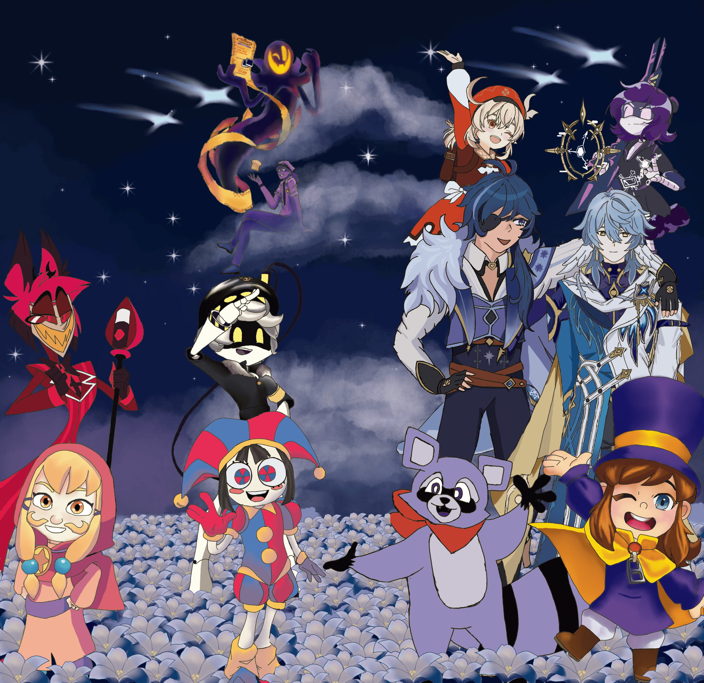

Ma coque de téléphone !
J'ai créer une illustration pour ma nouvelle coque de téléphone !

Mon ancienne coque de téléphone étant fortement abîmée, je me suis intéressé à la possibilité de commander un modèle personnalisé avec visuel imprimé.
J’ai donc choisi de concevoir moi-même une illustration destinée à habiller ma nouvelle coque.
Dès le départ, mon intention était de mettre en scène des personnages issus de mes licences favorites, réunis dans une composition inspirée d’une photo de groupe.


Dans un premier temps, j’ai réalisé des croquis à la main sur papier à l’aide de feutres Posca.
L’objectif n’était pas d’obtenir un rendu esthétique abouti, mais plutôt de poser les bases du projet et de clarifier mes intentions visuelles.
Cette étape m’a permis de définir le type d’illustration souhaité pour la coque, ainsi que de sélectionner les personnages à représenter.


Une fois les croquis réalisés, j’ai recherché des images de référence puis importé l’ensemble dans Krita pour travailler sur tablette graphique.
J’ai organisé les calques par personnage et par parties du corps (ex : tête → personnage 1), en séparant les couleurs. L’objectif était de dessiner les personnages uniquement, sans arrière-plan dans un premier temps.
Enfin, j’ai finalisé le rendu des personnages et réalisé l’arrière-plan.
Il est également à noter que j’ai modifié au dernier moment la position des personnages situés à gauche, suite à l’acquisition d’un nouveau téléphone. Grâce à l’organisation de mes calques, cet ajustement a pu être effectué rapidement et sans difficulté.

Pour l'export j'ai créé une copie de mon fichier puis j'ai fusionné et aplati tous les calques afin que l'image finale soit la plus légère possible.